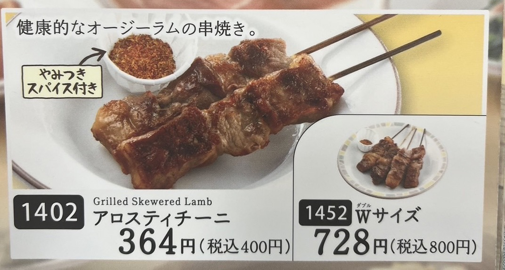

アロスティチーニ
羊の肉を串焼きにした、イタリア料理です。セットのスパイスがまじで合います！お好みで、野菜ペーストをかけて食べるのもおいしいです！
羊の肉を串焼きにした、イタリア料理です。セットのスパイスがまじで合います！お好みで、野菜ペーストをかけて食べるのもおいしいです！
レタスの量が多く、野菜補給が十分にできます。小エビのサラダが人気ですが私はチキン派です！
ハンバーグの上に野菜ペーストがかかっていて最高です。
ちなみに！じゃがいもにオリーブオイルと塩を混ぜたのにつけるのが個人的に好きです。
やっぱり、サイゼリヤドレッシングは大人気です。ボリューム満点ながら低カロリーでダイエットにおすすめです！
(ドレッシング多めとカスタムすると、たっぷりかけてくれるのでおすすめです。）

サイゼリヤの看板メニューと言えばこれです！
チーズが好きな方は焼きチーズミラノ風ドリア、卵が好きな方は半熟卵のミラノ風ドリアがおすすめです！